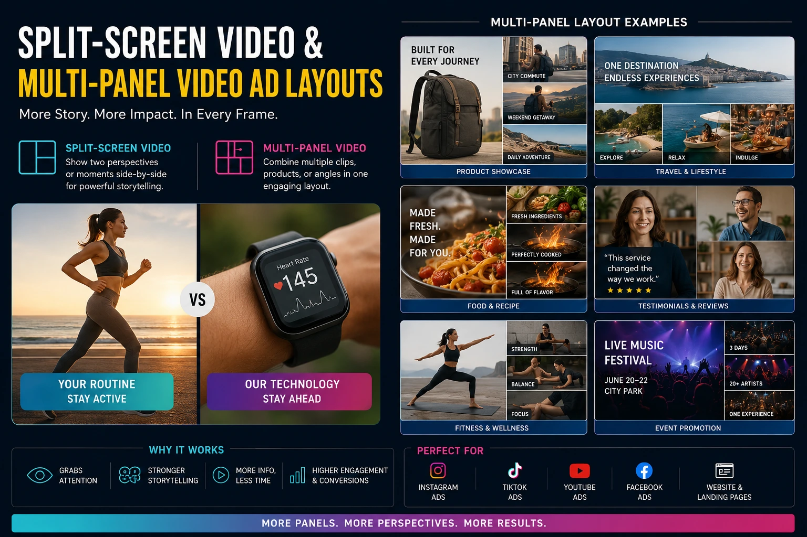
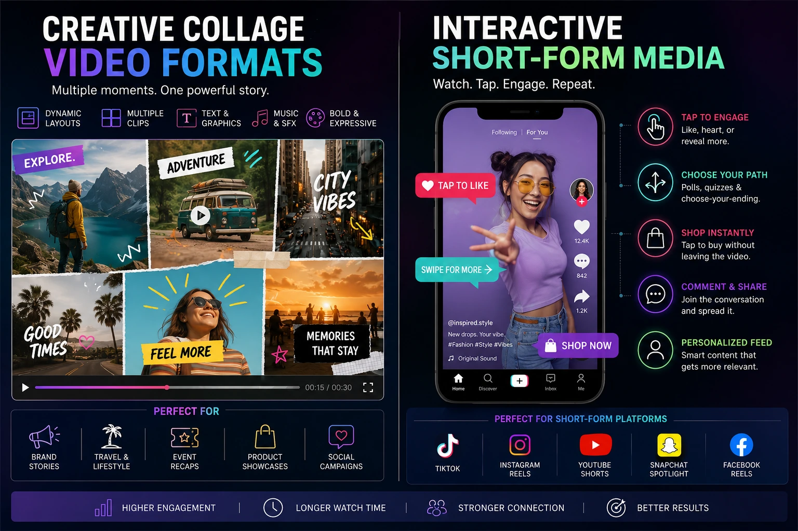

The Multi-Panel Narrative: Using Split-Screen and Grid Layout Video Editing to Match Fragmented Attention Spans
The Attention Span Problem That Linear Video Cannot Solve
The social media viewer of 2026 does not watch video the way a cinema audience watches film — passively, sequentially, with sustained attention from opening frame to closing credit. They scan. They absorb. They process multiple simultaneous visual inputs at a speed that would have been considered pathological in a pre-digital generation and is now simply the learned consumption pattern of an audience that has been trained by social media to extract information from visual density rather than sequential narrative.
This is the fundamental challenge of attention economics visual design: linear video — a single panel, a sequential narrative, one thing at a time — is a format designed for sustained focused attention. The modern social media audience's attention is not sustained, not focused, and not sequential. It is fragmented, distributed, and simultaneous. And a video format that does not accommodate this reality is a video format that the audience's attention system is not equipped to remain engaged with for more than a few seconds before the scroll impulse overwhelms the viewing behaviour.
Split-screen social media video, multi-panel video ads, creative collage video formats, and visual pattern interrupts are the high-engagement video editing approaches that accommodate rather than fight the fragmented attention pattern — designing video content that delivers information in the visual density and simultaneous format that the modern social media viewer's attention system is actually configured to process.
The Neuroscience of Simultaneous Visual Processing
The effectiveness of multi-panel video formats is grounded in specific characteristics of the human visual processing system that attention economics visual design exploits deliberately.
The visual cortex processes the full visual field simultaneously — not sequentially. The brain is not receiving a single sequential stream of visual information; it is processing the entire visual field in parallel, with different regions of the cortex handling different spatial locations, different motion directions, and different object categories simultaneously. A single full-frame video under-utilises this parallel processing capacity by presenting information in a single sequential stream.
A multi-panel video, by contrast, populates multiple regions of the visual field simultaneously with different visual content — engaging more of the parallel processing capacity of the visual cortex and producing a higher overall level of visual system activation. This higher activation is experienced by the viewer as greater engagement, greater interest, and greater visual stimulation — not as confusion or overload when the panels are compositionally designed to work together rather than compete.
The specific mechanisms that make multi-panel video formats neurologically engaging:
- The completeness instinct. When the brain encounters a multi-panel composition — multiple panels, each containing different visual information — it is motivated to make sense of the relationship between the panels: what do they share, how do they differ, what is the compositional argument being made. This sense-making drive is the same drive that keeps people looking at complex paintings longer than simple ones — the reward for understanding the composition. It holds viewer attention across the duration of the multi-panel frame.
- The novelty distribution effect. Multiple simultaneous panels mean that the viewer's eye moves between panels — and each movement of the eye from one panel to another is a micro-novelty event that resets the attention system's engagement level. A single panel that remains static for three seconds habituates the attention system; a three-panel split-screen where the eye moves between panels every 0.5 to 1 second maintains a novelty stimulus frequency that prevents habituation across the full duration.
- The information density reward. Social media audiences — particularly Gen-Z — have been conditioned by high-density content environments to find low-density content understimulating. A multi-panel video that presents multiple visual narratives simultaneously matches the information density that the audience's trained attention system expects and rewards with continued engagement.
Higher Scroll-Stop Rate
A split-screen or multi-panel composition in a social media feed is visually distinct from the single-panel content surrounding it — triggering the visual novelty response that stops the scroll before the viewer has consciously evaluated the content. The format itself is a thumb-stopping device.
Simultaneous Information Delivery
Multi-panel formats deliver multiple messages, comparisons, or narrative threads simultaneously — compressing information that would require sequential delivery into a single frame that communicates everything at once. For brands with multiple product attributes to communicate, this compression is a significant commercial efficiency.
Extended Dwell Time
The sense-making drive that multi-panel compositions trigger produces measurably longer dwell time than equivalent single-panel content — because the viewer remains engaged until they have decoded the compositional relationship between the panels, which takes longer than passively watching a single stream.
Aesthetic Distinctiveness
Multi-panel and collage video formats communicate creative intelligence and editorial sophistication at a glance — which communicates brand quality to viewers before any product message is processed. The format is itself a brand quality signal.

Split-Screen Social Media Video: The Compositional Frameworks
Split-screen social media video is the most accessible entry point into multi-panel video design — and the most versatile, because the two-panel split can serve multiple distinct narrative functions depending on the compositional relationship between the panels.
The specific compositional frameworks for split-screen social media video:
- The comparison split. Left panel and right panel show two different but related subjects simultaneously — before and after, product A and product B, the problem and the solution, two different uses of the same product. The comparison split delivers the comparative argument of the video in a single frame rather than sequentially, allowing the viewer to evaluate the comparison simultaneously rather than having to hold one image in memory while viewing the other. For Indian e-commerce brands in fashion, beauty, and food, the comparison split is one of the most commercially effective formats available — particularly for before-and-after product demonstrations.
- The parallel narrative split. Left panel and right panel show two different scenes that are connected by a shared narrative thread — the same action happening in two different contexts, two different people experiencing the same product, or a cause in one panel and its effect in the other, shown simultaneously. The parallel narrative communicates relationship and connection in a way that sequential cutting cannot — because the simultaneity of the two panels is itself the narrative content.
- The commentary split. The primary content occupies the larger panel (typically two-thirds of the frame); a commentary, reaction, or annotation occupies the smaller panel (one-third). This format mimics the reaction video format that Gen-Z audiences are highly familiar with — and the familiarity of the format communicates authenticity and community participation rather than brand advertising.
- The texture and context split. One panel shows the product or subject in close detail — macro texture, material quality, craft detail; the other panel shows the product in its lifestyle context — in use, in the environment, on a person. The combination of detail and context in a single frame communicates both the quality evidence and the aspirational context simultaneously, compressing what would require two separate images into a single, compositionally richer frame.
Multi-Panel Video Ads: The Grid Layout Framework
Multi-panel video ads extend the split-screen concept to three, four, or more simultaneous panels — creating a grid layout that distributes the visual narrative across multiple simultaneous cells. The grid layout framework introduces compositional complexity that requires more deliberate design but produces higher visual engagement than two-panel splits when executed with intentional structure.
The grid layout frameworks most effective for multi-panel video ads:
- The three-panel vertical strip. Three equally sized vertical panels side by side in the 9:16 vertical format — each showing a different product, angle, or context simultaneously. Effective for product range showcases, collection teaser ads, and fashion editorial content where multiple garments or products need to communicate as a cohesive visual family. Each panel plays a loop at a slightly different phase offset, creating a visual rhythm that prevents the composition from feeling static.
- The hero-plus-three grid. One large panel occupying the upper two-thirds of the frame, with three smaller panels arrayed horizontally in the lower third. The large panel carries the primary narrative; the three small panels each carry a distinct supporting element — a product detail, a testimonial face, an ingredient or feature. This layout mirrors the visual structure of editorial magazine design and communicates the same sense of information organisation and editorial sophistication.
- The magazine mosaic grid. Four panels of equal or varied sizes arranged in a mosaic layout — combining portrait and landscape orientations with varied cell sizes to create a compositionally dynamic grid that communicates visual intelligence and editorial design. The mosaic grid is the most visually sophisticated multi-panel format and requires the most deliberate planning — but it is the format that earns the strongest aesthetic recognition response from the design-aware audiences in fashion, lifestyle, and creative brand categories.
- The sequential reveal grid. A grid in which the panels activate progressively across the duration of the video — first one panel fills with content, then a second appears, then a third, until the full grid composition is visible — creates the sense-making engagement of a compositional reveal that unfolds over time. Each new panel activation is a novelty event that resets viewer attention and creates anticipation for the next panel's reveal.
Visual Pattern Interrupts: Resetting Attention at Critical Moments
Visual pattern interrupts are the specific technique within high-engagement video editing that uses sudden, unexpected visual changes to reset viewer attention at the moments in the video where engagement is most at risk. They differ from micro-transitions (which smooth edit points) in their deliberate disruptiveness: a visual pattern interrupt is intentionally jarring in a way that triggers the alerting response rather than being felt as a satisfying cut.
The specific visual pattern interrupt techniques deployed in advanced editing pacing hacks:
- The aspect ratio break. A video playing in full 9:16 vertical format suddenly collapses into a 4:3 or 1:1 aspect ratio — surrounded by colour bars, black borders, or a contrasting background. The sudden change in the video's relationship to the screen frame is a strong visual pattern interrupt that signals "the format has changed — pay attention." After the pattern interrupt moment, the video expands back to full frame, having reset the viewer's engagement level.
- The colour inversion flash. A single frame or two-frame colour inversion — the entire frame displayed in inverted colours for the duration of one to two frames — creates a visual shock event at the edit point that is stronger than a flash frame micro-transition. Used at the mid-point of a video, the colour inversion flash produces a strong alerting response that re-engages the viewer's attention for the second half of the content.
- The sudden split. A full-frame video composition that suddenly divides into a split-screen at the mid-point — where the second panel appears with new, distinct visual content — creates both a visual pattern interrupt (the frame has unexpectedly divided) and the sense-making engagement of the split-screen format simultaneously. This is one of the most effective thumb-stopping video ad layouts for the mid-video attention reset.
- The texture or filter switch. A mid-video switch from clean, colour-graded contemporary footage to a grainy, vintage, or stylised filter — or vice versa — creates a visual style shift that communicates a structural transition to the viewer's attention system. The sudden aesthetic change is registered as a new section beginning, which re-activates the narrative drive's motivation to follow the story to its conclusion.

Creative Collage Video Formats: The Aesthetic Dimension
Creative collage video formats represent the most visually ambitious application of multi-panel design — combining video footage, still photography, animated graphics, typography, and illustration in a single compositional frame that communicates through visual density and aesthetic richness rather than sequential narrative.
The specific production approach for creative collage video formats:
- The visual anchor and the satellite elements. Effective collage compositions have a primary visual anchor — the most visually compelling element that the eye finds first — and satellite elements arranged around it that add context, detail, texture, and typographic information. The anchor carries the brand's primary visual message; the satellite elements build the world around it. The compositional relationship between anchor and satellites determines whether the collage reads as intentional art direction or as a pile of visual content without organisation.
- Timed element activation for engagement building. Rather than presenting the full collage composition from the first frame, creative collage video formats build the composition progressively — each element appearing in sequence with a deliberate timing that creates the sense of a visual argument being assembled. The first element establishes the anchor; subsequent elements add context and depth; the final element completes the composition and delivers the brand's message. Each activation is a novelty event that maintains engagement across the composition's build.
- Typography as a compositional element, not just information. In collage video formats, typography is a visual element as much as it is a communication medium — the scale, weight, colour, and positioning of text within the collage contributes to the compositional balance and visual rhythm of the frame. Typography that is sized and positioned purely for legibility, without regard for its compositional function, produces collage layouts that feel two-dimensional. Typography that functions as a compositional element — overlapping visual elements, scaled for visual balance rather than pure readability, positioned to guide the eye through the frame — produces collage layouts that have the visual sophistication that the aesthetic-aware audience recognises.
- Motion differential between elements. In a collage composition where multiple elements are simultaneously present, assigning different motion speeds and directions to different elements — one element moving slowly to the left while another moves quickly to the right, one element static while another pulses — creates the visual complexity that holds the viewer's eye moving through the frame rather than settling on a single element and disengaging.
Interactive Short-Form Media Assets: Extending the Multi-Panel Concept
Interactive short-form media assets extend the multi-panel concept into formats where the viewer's interaction — a tap, a swipe, a choice — determines which panel or element activates next. While true interactive video is still emerging as a mainstream format on Indian social platforms, the interactive short-form concept is already fully deployable through specific existing formats:
- Instagram Story polls and sliders layered on video. A product teaser video with an embedded Instagram poll — "which colourway?" "which design?" — creates an interactive engagement layer over the video content that dramatically increases Story completion and response rates. The multi-panel concept is applied here through the side-by-side display of the two poll options as visual panels within the Story frame.
- Carousel video with a cliffhanger first frame. An Instagram carousel where the first frame is a split-screen with one panel visible and the second panel deliberately cut off at the carousel boundary — with an instruction to "swipe to see the other half" — creates an interactive completion imperative that drives carousel engagement rates significantly above the carousel format's average. The split-screen that spans the carousel boundary is a multi-panel format that uses the platform's swiping mechanic as a reveal device.
- YouTube end screen panels as multi-panel conversion architecture. A YouTube video that ends with a multi-panel end screen — presenting two or three simultaneous next-video recommendations as visual panels — applies the multi-panel engagement principle to the platform's conversion architecture, increasing click-through rates on end screen elements by presenting multiple options simultaneously rather than sequentially.
Advanced Editing Pacing Hacks: Building the Multi-Panel Timeline
Advanced editing pacing hacks for multi-panel video production require a different timeline approach from standard single-panel video editing — because the editor is managing not just the temporal rhythm of cuts but the spatial rhythm of panel activations, the motion differential between simultaneous elements, and the compositional balance of the multi-panel frame across the video's full duration.
The specific timeline management approach for multi-panel video editing:
- Build the audio layer first. The audio track — music, sound effects, and any spoken content — defines the temporal architecture of the multi-panel composition. Build the complete audio layer before placing any visual elements on the timeline, then map every panel activation, every cut, and every element entrance to specific audio events. This audio-first approach ensures that the visual complexity of the multi-panel format does not obscure the audio-visual synchronisation that is as important for multi-panel content as for single-panel.
- Layer panels from background to foreground. Construct the multi-panel composition by placing the background elements first — the panel colour fills, the background video, the static visual anchors — then layering foreground elements progressively. This layer-order approach allows the editor to see the compositional balance at each stage of the build and adjust element positioning before the full composition obscures the background layers.
- Stagger activation timing for maximum engagement. Plan the timing of each panel's activation at the edit planning stage — before working in the editing software — mapping each activation to the audio event that triggers it. A grid that activates all panels simultaneously is a single novelty event; a grid that activates panels progressively across the video's duration is a sustained engagement structure with multiple novelty events.
- Review at 50% speed before final export. Multi-panel compositions at full playback speed may obscure compositional problems — elements that overlap awkwardly at specific moments, panels that activate off-beat from the audio event they were intended to align with, motion elements that interfere with text legibility at specific frames. Reviewing the complete composition at half speed before final export identifies these issues while they can still be corrected without reconstructing the full timeline.
Thumb-Stopping Video Ad Layouts: The Format Selection Guide
Selecting the right thumb-stopping video ad layout from the multi-panel options available requires matching the format to the brand's specific objective, audience, and platform context:
For Product Comparison (e-commerce)
- Format: Vertical two-panel comparison split
- Left panel: before / without product; right panel: after / with product
- Both panels play simultaneously from the same timeline position
- Single text overlay centred between panels: the specific quantified outcome
For Collection Launch (fashion/lifestyle)
- Format: Three-panel vertical strip with staggered activation
- Each panel reveals a different look from the collection
- Panels activate sequentially: 0s, 0.5s, 1s — building the grid across the first two seconds
- Brand name and collection title appear centred across all three panels as the final element
For Brand Storytelling (corporate/founder)
- Format: Commentary split — large primary panel with small secondary panel
- Primary panel: the brand story content (product, facility, team)
- Secondary panel: founder or team member reacting or commenting in real time
- The split activates mid-video as a pattern interrupt, not from the opening frame
Conclusion
Split-screen social media video, multi-panel video ads, creative collage video formats, and visual pattern interrupts are the high-engagement video editing approaches that accommodate the fragmented attention pattern of the modern social media audience rather than competing against it. They deliver information at the information density the audience's trained attention system expects, engage the visual cortex's parallel processing capacity more fully than single-panel video, and create the compositional complexity that earns sustained dwell time through the sense-making drive.
Attention economics visual design through multi-panel formats is not a stylistic preference — it is a systematic response to the specific neurological reality of the audience these formats need to reach. The brands that apply these advanced editing pacing hacks systematically — with compositional intentionality, audio-visual synchronisation, and format selection matched to their specific objectives — produce the interactive short-form media assets that convert the fragmented attention of the modern social media viewer into sustained engagement and commercial action.
At The PhD Ads, we produce high-engagement video editing across the full spectrum of multi-panel formats — split-screen, grid layout, creative collage, and visual pattern interrupts — for Indian brands ready to produce thumb-stopping video ad layouts that match rather than fight the attention economics of the modern social media feed.
Key Topics
Ready to Produce Video Ads That Match How Your Audience Actually Watches?
At The PhD Ads, we produce high-engagement video editing for Indian brands — split-screen social media video, multi-panel video ads, creative collage formats, and visual pattern interrupts, all designed around the attention economics of the modern social media feed.
Email: team@e2o.in